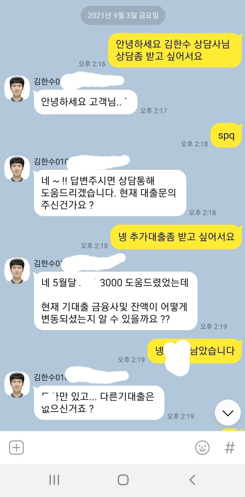
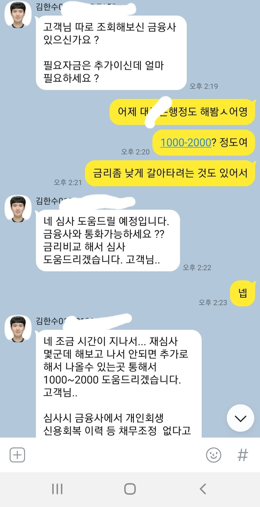
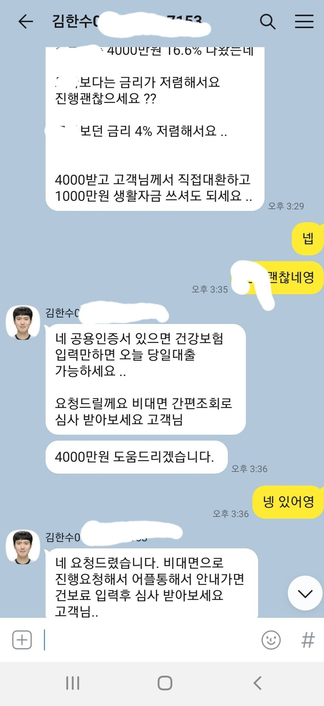

[직장인대출] [직장인대출]김한수 상담사님 감사합니다.
재직형태 : 직장인
재직기간 : 1년 4개월
사대보험가입여부 : 유
소득 : 세전 연4800
신용등급 : 나이스 697 올크 675
기대출 : 3000
필요서류 : 전자서명(공인인증서), 신분증
필요자금 : 추가대출 자금 1000-2000
3개월전에 김한수 상담사님을 통해 대출을
받았습니다.
혼자 대출을 알아보고 실행하려 했으나
신용점수도 낮고 알아보는데 한계가 있어서
다시 도움의 손길을 내밀었습니다.
늦었다 생각했던 오후였는데 김한수상담사님의
큰 도움으로 원하는 대출을 받게 되었습니다.



이번에도 최선을 다해 도와주신 김한수 상담사님께 감사드립니다.